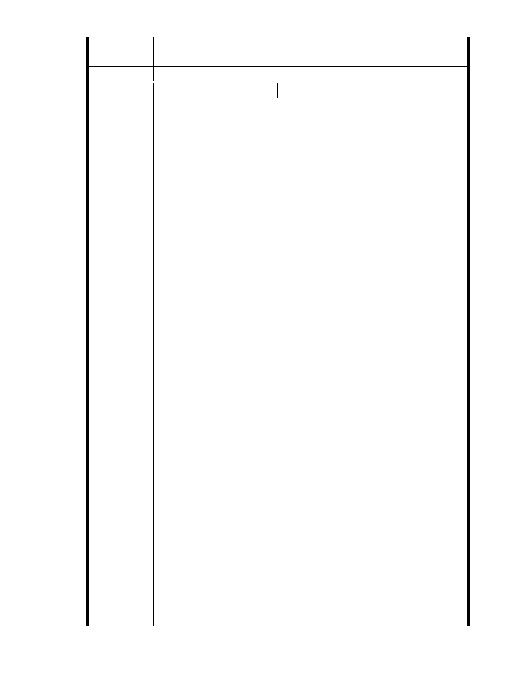

三、後續審理程序將要求申請人加強與在地區民、社會大眾，就基地現
況、規劃方案及環境助益作為等方面加強溝通。
委 員 會 決 議 同編號 1。
編號
陳情理由
25 陳情人 楊重信（99.11.15 於本會網站傳送資料）
對慈濟申請變更保護區為社會福利特定專用區案之緊急呼籲
楊重信（文化大學景觀學系教授）
（11/11/2010）
本案基地座落於內湖區大湖公園北側之保護區，基地是池塘填
土而成，基地南側與大湖僅是一路之隔、基地西北及東側山坡地均
屬於潛在順向坡，北基地西北隅邊緣有基隆斷層經過、南基地東北
側為地下礦坑開採範圍，此基地不折不扣是一處高度環境敏感地
區。慈濟基金會於民國 86 年購地時明知此基地座落於保護區且其環
境敏感性非常高，根本不適宜從事開發行為，而仍有恃無恐購入土
地，並且自 94 年起一而再、再而三地，仗著宗教勢力，打著「社會
福利旗幟」，企圖掩蓋破壞環境與衝撞台北市保護區政策之事實，強
行遊說台北市政府都市計畫委員同意將該基地變更為「社會福利特
定專用區」，讓其可興建 54,750 平方公尺（約 16,562 坪）之樓地板
面積。本案申請單位慈濟基金會實在是居心不良：明知此基地位於
保護區且基地環境敏感度甚高，不適宜開發，而仍貪圖保護區地價
較便宜，企圖挾宗教勢力強渡關山，摧毀台北市保護區政策，此為
存心不良之一；將基地面積限縮於 5 公頃內，規避環境影響評估，
此為存心不良二；申請開發之樓地板面積高達 54,750 平方公尺（以
一般住家含公設 50 坪計算，相當於 330 戶住宅之規模），此龐大量
體不論是公益設施或私益設施，都一樣會對環境造成無法承受之衝
擊，慈濟基金會以「慈善、社會福利」為由，取得道德制高點，企
圖轉移環境衝擊焦點，弱化都市計畫委員對環境保護之堅持，以蒙
混過關，此為居心不良之三；本案申請個案變更迄今已歷 5 年餘，
96 年 8 月至 99 年 8 月整整 3 年間申請作業幾乎完全停頓，外界以為
有高度智慧之「上人」已指示不要繼續申請開發了，沒想到慈濟基
金會於今年 9 月五都選舉已進入緊鑼密鼓時刻，趁機又再動起來，
台北市都市計畫委員會也乖順的配合，密集開會，擺著一副要快速
通過主要計畫之態勢。唉！究竟慈濟在台北之勢力龐大，會員與志
工人數眾多，一票就是一票，市府官員豈敢輕忽？慈濟基金會利用
此選舉白熱化時刻全力推動本「高度爭議」的「環境破壞」案，很
難讓人不會有「趁 X 打 X」或「趁機 X X」之聯想，此為居心不良之
四。
「慈濟基金會」設立宗旨之一在於追求「無災無難」，而「環境
保護」為該會「一步八法印」之法印之一。本開發案不僅本身暴露
於潛在災害風險地區，且會加重周邊地區之潛在災害風險，以及嚴
重破壞環境與生態；因此，本案嚴重違背慈濟基金會設立宗旨及志
- 30 -